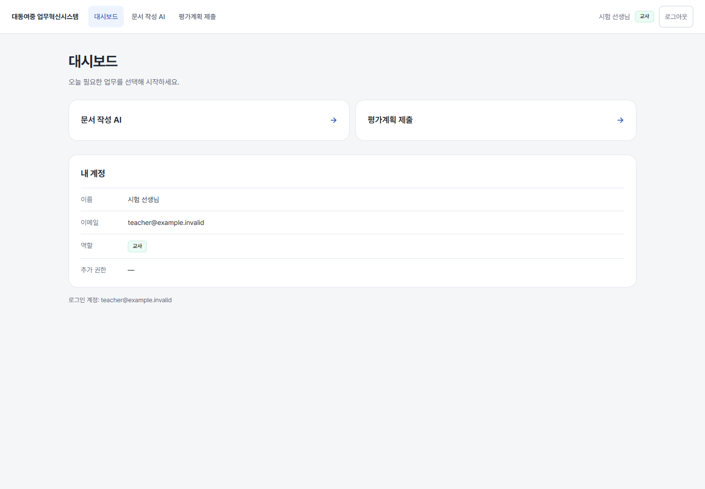
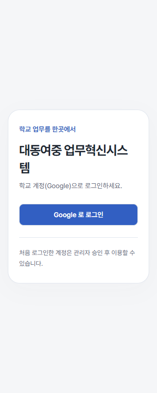
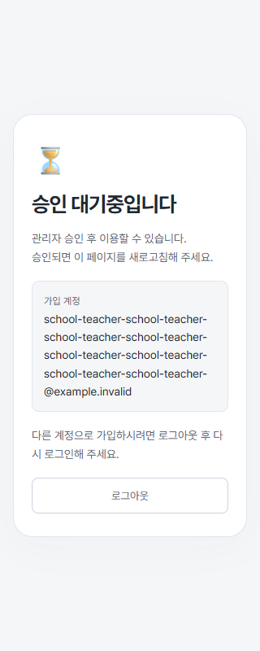
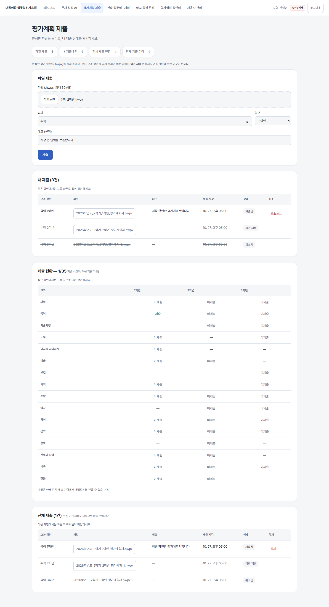
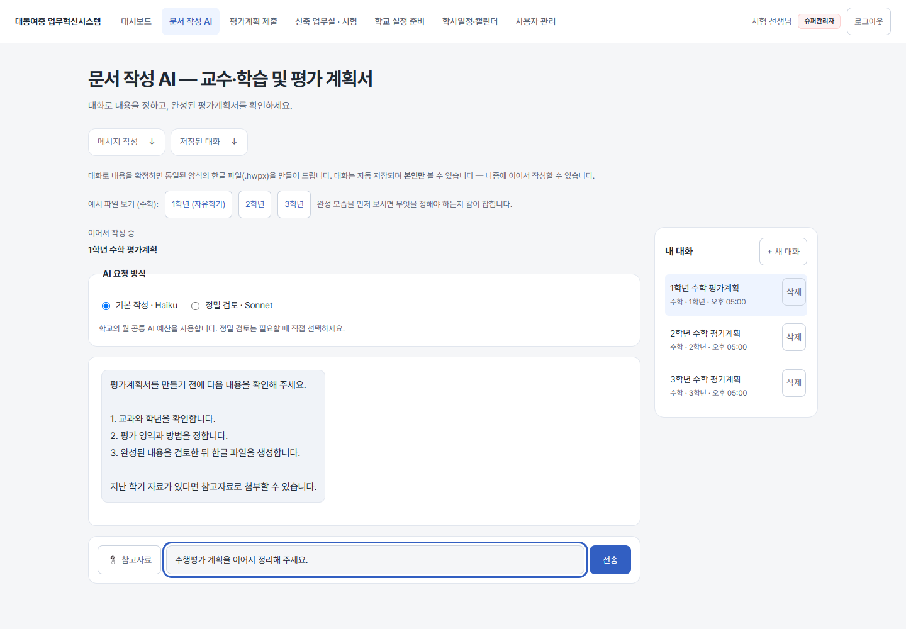
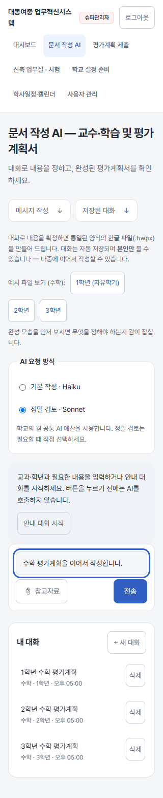

기존 업무와 업무실의 화면을 이어 주고, 입력·이동·긴 자료 표시를 정리했습니다.
실제 React 화면 + 합성 시험 자료입니다. 운영 데이터나 새 기능 활성화 결과가 아닙니다. 이미지를 누르면 원본 크기로 볼 수 있습니다.
현재 권한으로 이용 가능한 업무만 바로가기에서 보입니다.

밝은 바탕과 읽기 간격을 맞췄습니다. 로그인 방식은 같습니다.

긴 계정도 읽을 수 있고 기존 승인 절차를 유지합니다.

입력·내 제출·전체 현황·이력을 화면 안에서 오갑니다.

대화와 입력을 먼저, 저장된 대화는 옆에 둡니다.

작성 도구가 먼저 보이고, 저장된 대화가 뒤에 이어집니다.
